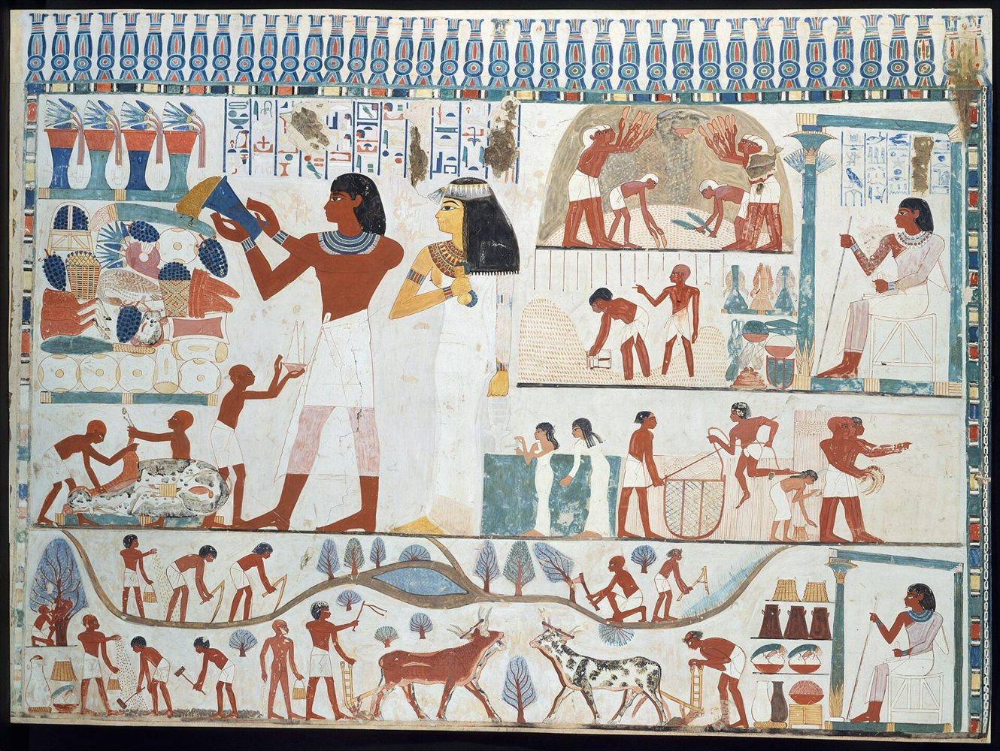
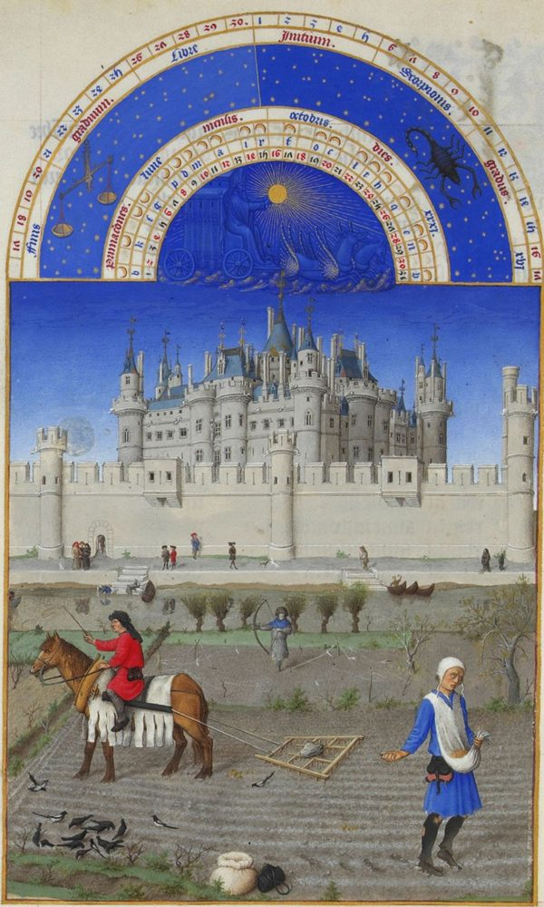
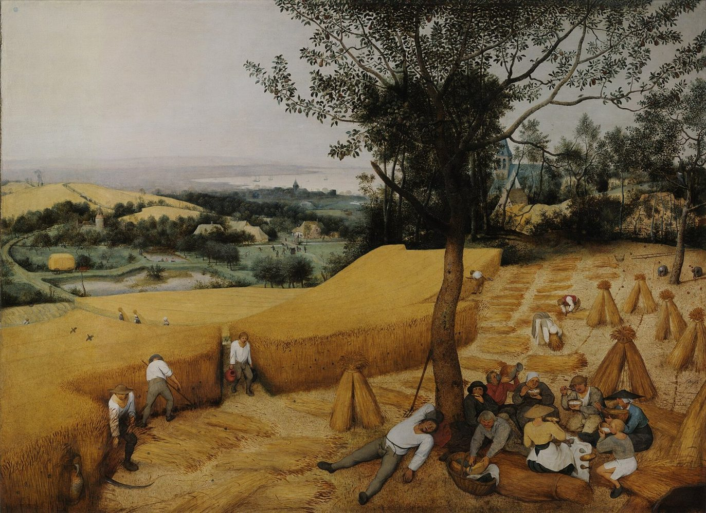
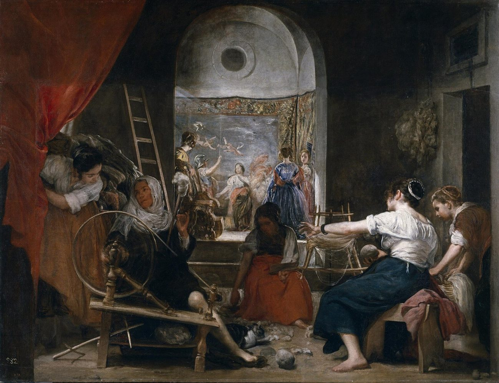
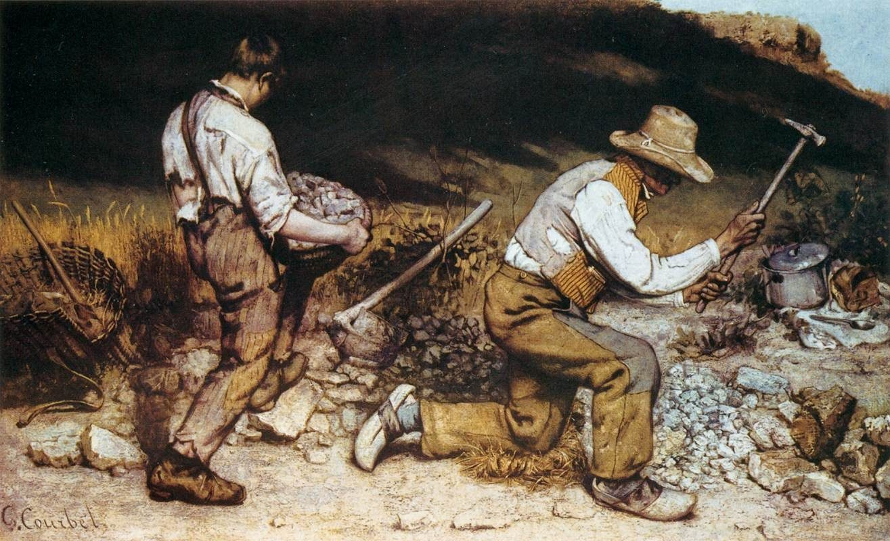
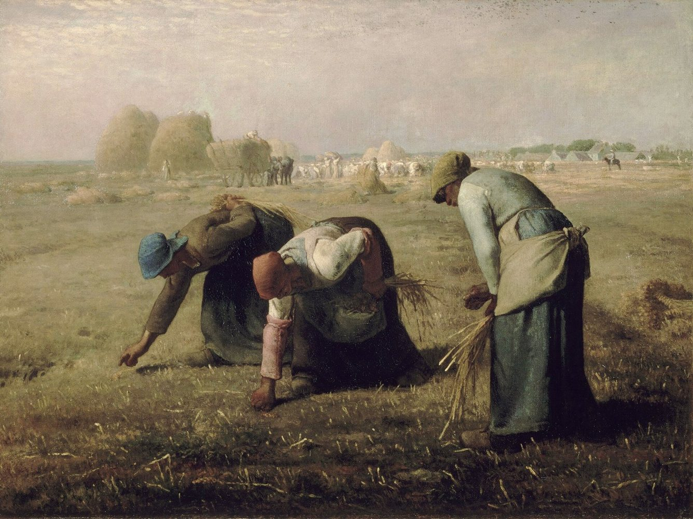
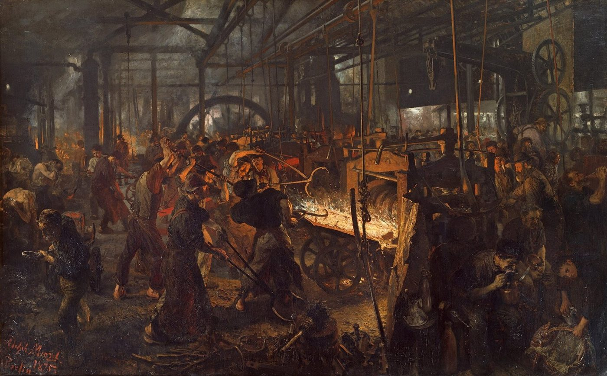
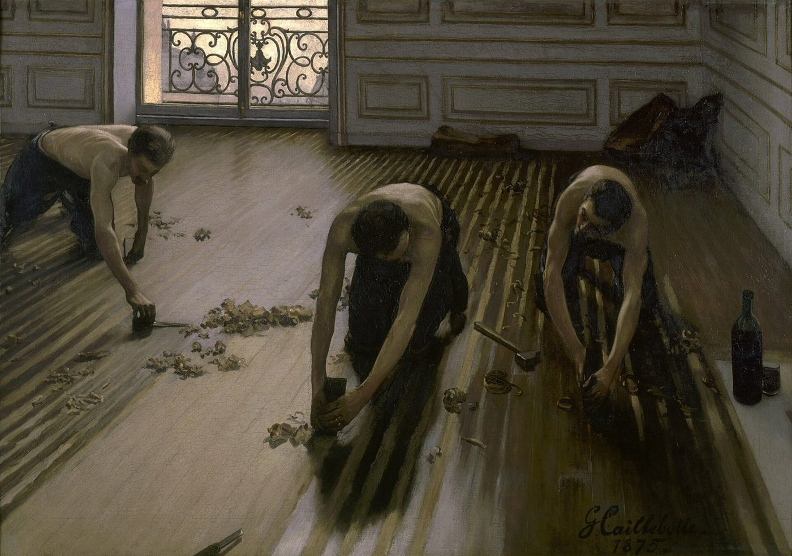
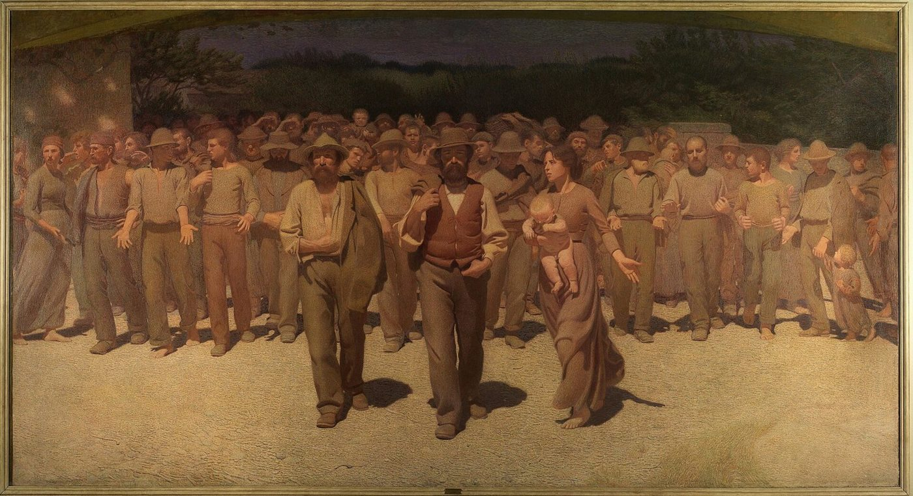

Área de Integração · 11.º ano · Módulo 3 · Tema-problema 6.1
O trabalho, a sua evolução e estatuto no Ocidente
O tema-problema
Porque trabalhamos, e como chegámos aqui?
definir trabalho, e distingui-lo do que não é trabalho
distinguir a dimensão económica da dimensão social
identificar diferentes formas de trabalho
perceber como as relações de trabalho mudaram
conhecer o Taylorismo e o Fordismo, e porque estão em crise
preparar o currículo e a entrevista de emprego
Conceitos-chave
Capítulo
O que é trabalhar?
A vossa definição · o trabalho na física · ócio e negócio
Ócio e negócio · latim e grego
Uma palavra que veio primeiro
O trabalho define-se pela negativa: negócio é o que não é ócio. O ócio vinha primeiro.
Antes de começar · 3 minutos
Trabalho é…
Escrevam numa folha, sozinhos. Não há respostas erradas.
O trabalho na física
Para um físico, trabalho é uma conta
Uma só medida
Pessoas, cavalos e máquinas na mesma balança
um homem
um cavalo
uma máquina a vapor
joules: uma só unidade para todos
«A força viva é a que se paga.» Joseph Montgolfier, 1808
Citado em Vatin, F. (2007). Tradução livre.
O trabalho na física
O que capta, e o que deixa de fora?
O que a definição capta
O que deixa de fora
Intuição · o que quer dizer «vezes»?
Multiplicar é esticar
Multiplicar por um número é esticar ou encolher outra quantidade.
Intuição · a sombra de uma força
Só a sombra faz andar
Para ir de A para B, só conta a parte da força que aponta de A para B.
Porquê a física, em Área de Integração?
Uma conta obriga-nos a pensar
uma palavra
«trabalho»
uma conta precisa
W = F × d
um olhar crítico
o que mede? o que deixa de fora?
Da física à economia
A mesma fórmula, numa fábrica
| física | trabalho | = | força | × | distância |
|---|---|---|---|---|---|
| fábrica | a produçãosapatos produzidos | = | força de trabalhohoras de trabalho humano | × | taxa de produçãosapatos por hora |
| exemplo | 80 sapatos | = | 5 sapateiros × 8 h = 40 h | × | 2 por hora |
Adam Smith (1776): o trabalho é um fator de produção; mede-se pelo que produz.
Da física à filosofia · Karl Marx, 1867
Uma força que transforma a natureza, e se transforma a si própria
natureza
trabalho humano
algo novo
«O trabalho é um processo entre o ser humano e a natureza.» Marx, O Capital, livro I (1867), tradução livre
Da física à estatística · Organização Internacional do Trabalho, 2013
Há trabalho quando outra pessoa o podia fazer por nós
trabalhar numa fábrica
para outros, pago
cuidar de um filho
para uso próprio
cultivar a horta para comer
para uso próprio
fazer voluntariado
para outros, sem pagamento
O critério da terceira pessoa
Podia pagar a outra pessoa para fazer isto por mim? Sim → é trabalho, mesmo que ninguém me pague.
OIT (2013), Resolução I da 19.ª Conferência Internacional dos Estaticistas do Trabalho, § 6 · Reid, M. (1934)
Quatro definições · clica em cada uma
Quatro maneiras de definir trabalho
Três critérios
Pago? Com esforço? Útil a outros?
Onde começa o trabalho? Nenhum critério, sozinho, chega.
Votação de braço no ar · 6 minutos
Isto é trabalho? O que diria a OIT?
Editar vídeos para o canal de um amigo, sem receber
Sim: trabalho voluntário, de livre vontade, sem pagamento, para outros.
Cuidar de um avô doente
Sim: produção para uso próprio (cuidar da família), sem pagamento.
Estudar para um teste
Não: ninguém pode aprender por nós (mas o professor que ensina, esse, trabalha).
Jogar futebol num clube da primeira liga
Sim: emprego, trabalho em troca de salário.
Fazer a instalação elétrica da casa dos pais
Sim: produção para uso próprio, um serviço para a própria família.
Fazer voluntariado num banco alimentar
Sim: trabalho voluntário, através de uma organização.
Aristóteles · 384–322 a.C.
Quem era Aristóteles?
Filósofo grego
viveu em Atenas há cerca de 2400 anos
Em Atenas
Aristóteles · século IV a.C.
Trabalhamos para ter ócio
meio
negócio · ascholía
trabalhar a terra, ofícios, comércio
fim
ócio · skholḗ
pensar, conversar, participar na vida da cidade
Quem trabalhava?
escravos, mulheres, estrangeiros
Quem tinha ócio?
uma minoria de cidadãos livres
«Estamos ocupados para ter ócio, e fazemos a guerra para viver em paz.» Aristóteles, Ética a Nicómaco, X, 7
Século VI · S. Bento de Núrsia
E se a seta se inverter?
meio
descanso
para recuperar: o fim de semana, as férias
fim
trabalho
o que dá sentido
rezar
ler
trabalhar
«A ociosidade é inimiga da alma.» Regra de S. Bento, cap. 48
Trabalhamos para ter ócio, ou descansamos para voltar a trabalhar?
1517 · Martinho Lutero
Todo o trabalho é uma vocação
Antes
Com Lutero
vocação para todos: serve-se a Deus no trabalho de todos os dias
Reforma protestante: movimento do século XVI que dividiu a Igreja cristã do Ocidente.
Século XVI · João Calvino
Estarei entre os escolhidos?
Predestinação
Deus já decidiu quem se salva
…mas ninguém sabe se é um dos escolhidos.
Haverá algum sinal?
Os calvinistas, segundo Max Weber (1904–1905)
Trabalhar, poupar, investir… e repetir
Um sinal de Deus?
«talvez eu seja um dos escolhidos». Nada de luxo: o dinheiro não é para gozar.
Para Weber, esta ética ajudou a fazer nascer o capitalismo moderno.
O trabalho deixa de ser coisa de escravos: torna-se um dever, e uma virtude.
Max Weber, A Ética Protestante e o Espírito do Capitalismo (1904–1905)
Verifica o que aprendeste
Seis perguntas rápidas
Em latim, «negotium» quer dizer…
nec + otium: o negócio define-se como a falta de ócio.
Na física, o trabalho é…
W = F × d, em joules.
Para a OIT, cuidar de um avô doente é trabalho?
Sim: produção para uso próprio. Outra pessoa podia fazê-lo por nós.
Para Aristóteles, trabalhamos para…
O negócio é o meio; o ócio é o fim.
Quem disse que todo o trabalho é uma vocação?
Lutero (1517): serve-se a Deus no trabalho de todos os dias.
Segundo Weber, que ética ajudou a nascer o capitalismo?
Trabalhar, poupar, investir e repetir, sem luxo.
Quatro palavras · clica em cada uma
As palavras guardam o que pensávamos do trabalho
Que palavras falam do esforço? E quais falam do resultado?
Hannah Arendt · 1906–1975
Quem era Hannah Arendt?
filósofa e teórica política
nasceu na Alemanha, numa família judaica
fugiu dos nazis
As Origens do Totalitarismo · 1951
Como foi possível o nazismo?
A Condição Humana · 1958
O que faz de uma vida uma vida humana? Não basta sobreviver nem fabricar: é preciso agir com os outros.
Hannah Arendt · A Condição Humana, 1958
Labor, obra e ação
Labor · animal laborans
Para sobreviver: repete-se e é logo consumido.
ex.: lavar a loiça
Obra · homo faber
Fabricar coisas que duram e formam um mundo comum.
ex.: uma casa, uma instalação elétrica
Ação · entre os outros
Agir e falar com os outros: muda as relações, não produz objetos.
ex.: votar, debater, organizar-se
Escolha múltipla
Labor, obra ou ação?
Qual destas atividades é labor?
O jantar é consumido e é preciso recomeçar: labor.
O que distingue a obra do labor?
A obra produz coisas que duram.
Os estafetas de uma cidade reúnem-se, discutem e decidem exigir em conjunto melhores condições. Isto é…
Ação: começar algo novo com os outros.
Porque critica Arendt a sociedade moderna?
O labor ganhou às outras duas atividades.
Aula 2
As duas dimensões do trabalho
Económica
Fator de produção: produz bens e serviços e dá um rendimento.
Quanto vale, e quem paga?
Social
Parte de quem somos: identidade, estatuto, relações, utilidade para os outros.
O que diz sobre mim?
E estudar? Os economistas chamam-lhe investimento em capital humano.
Futebolista profissional: que dimensão?
Teoria · tipos de trabalho
Formas de trabalho
Por conta de outrem
trabalha para um empregador, que paga um salário
ex.: técnico numa empresa de eletricidade
Por conta própria
trabalha para si, com os seus clientes
ex.: editor de vídeo independente
Não pago, em casa
tarefas domésticas e de cuidado
ex.: cuidar dos filhos ou dos avós
Voluntário
sem pagamento, por uma causa
ex.: banco alimentar, ONG
Assalariado
quem trabalha por conta de outrem, sob a autoridade de um empregador (horário, local, tarefas), em troca de um salário. Hoje, a maioria de quem trabalha em Portugal é assalariada.
Código do Trabalho, artigo 11.º
Capítulo
Uma introdução ao direito do trabalho
O que é o direito · contratos · Constituição
Introdução ao direito · clica: quem te obriga?
Há muitos tipos de regras. Qual é a diferença?
O direito são as regras obrigatórias da vida em sociedade, que o Estado pode impor.
Introdução ao direito
Os ramos do direito
Direito do trabalho: uma relação entre pessoas, mas com muitas regras que o Estado impõe.
O direito do trabalho
Porque existe um direito do trabalho?
Quem precisa do salário tem menos força para negociar do que quem o paga.
A lei põe peso do lado mais fraco: limites que nenhum contrato pode ultrapassar.
O direito do trabalho
Como está organizado?
↑ por cima: a Constituição
Relações individuais
um trabalhador e o seu empregador
Relações coletivas
os trabalhadores organizados
Código do Trabalho · dois contratos
Contrato de trabalho ou prestação de serviços?
| Contrato de trabalho | Prestação de serviços | |
|---|---|---|
| O que se promete | uma atividade: o tempo | um resultado: o vídeo, a instalação |
| Quem manda | o empregador | o próprio |
| Horário e local | fixados pelo empregador | escolhidos pelo próprio |
| Ferramentas | do empregador | do próprio |
| Proteção | férias, subsídios, limites ao despedimento | muito menor |
| Lei | Código do Trabalho, art. 11.º | Código Civil, art. 1154.º («recibos verdes») |
Código do Trabalho · tipos de contrato
Quanto tempo dura?
Período experimental: em regra 90 dias; 180 para quem procura o primeiro emprego.
Código do Trabalho, na redação das Leis n.º 93/2019 e n.º 13/2023
Exercício · 5 minutos
Que contrato é este?
A Ana é contratada para substituir uma colega de licença de parentalidade, até ela voltar.
A termo incerto: dura até acabar o motivo.
O Rui é contratado por 12 meses para reforçar a equipa na instalação elétrica de um hospital.
A termo certo: tem data de fim.
A Marta edita vídeos para três clientes, em casa, com o seu computador, e passa recibos.
Prestação de serviços: autonomia, ferramentas próprias, vários clientes.
O João passa recibos, mas trabalha das 9h às 18h no escritório da empresa, com o computador da empresa e um chefe.
Falso recibo verde: presume-se contrato de trabalho.
O Pedro trabalha nas vindimas durante três semanas, em setembro.
Muito curta duração: até 35 dias.
Provocação à turma
Todos os contratos dão para comprar casa?
Ana
contrato sem termo, há 3 anos
1 100 € líquidos
Bruno
contrato a termo de 6 meses
1 100 € líquidos
Carla
recibos verdes, vários clientes há 4 anos
1 100 € líquidos
Faz as contas: a taxa de esforço (máximo 45 %)
prestações até € por mês
Porque é que pode ser mais difícil para o Bruno, se ganha o mesmo?
Banco de Portugal, recomendação macroprudencial em vigor desde 1/8/2026
Constituição da República Portuguesa · 1976 · clica em cada artigo
O trabalho na Constituição
Constituição da República Portuguesa, versão em vigor (parlamento.pt)
A Constituição e as outras leis
A lei mais forte de todas
Se uma lei vai contra a Constituição, não vale.
O princípio da proporcionalidade · artigo 18.º
Não se usa um canhão para matar uma mosca
resolve, mas destrói tudo à volta
resolve, com o mínimo de estragos
Greve num hospital: três perguntas
adequada?
serve para o fim?
necessária?
não há meio mais leve?
equilibrada?
o ganho compensa a perda?
Serviços mínimos nas urgências, sim; proibir toda a greve, não.
Um tema de agora · 2025–2026
Mudar a lei do trabalho
Governo
mais flexibilidade para as empresas, economia mais competitivaSindicatos e oposição
menos proteção para os trabalhadores, sobretudo os jovensCNN Portugal (19/06/2026); Renascença (09/09/2025, 18/06/2026); Sábado (26/10/2026)
E tu com isso?
Porque é que a Constituição te interessa
Vais assinar um contrato
já no estágio: saber o que é teu por direito
Vais saber quando dizer não
a um despedimento sem justa causa, a horas sem fim
Vais votar
aos 18 anos, em quem faz as leis
Vais saber onde pedir ajuda
ACT, sindicatos, Provedor de Justiça
Quem conhece os seus direitos consegue defendê-los.
Verifica o que aprendeste
Seis perguntas rápidas
Quem pode impor as regras do direito?
Tribunais, multas, prisão.
Porque existe um direito do trabalho?
Quem precisa do salário tem menos força para negociar.
Um falso recibo verde é…
Com horário, local, ferramentas e chefe, presume-se contrato de trabalho.
Que artigo proíbe despedir por motivos políticos?
Artigo 53.º: segurança no emprego.
O lock-out é…
Artigo 57.º, n.º 4.
Qual é a lei mais forte?
Todas as outras têm de a respeitar.
O mundo do trabalho · atividades
Hoje, os protagonistas são vocês
Linha de opinião
10 minTeatro em grupos
45 minOs juízes decidem
durante as cenasBilhete de saída
5 minAquecimento · 10 minutos · clica para ver a ligação à matéria
Concordas?
Teatro em grupos · 45 minutos
Como funciona
Formar grupos
3 grupos de 4 ou 5; quem sobra é juiz
Tirar cartões
um papel e um objetivo secreto
Preparar
combinar a cena, sem guião
Representar
até 4 minutos por cena
Os juízes decidem
que direitos? quem tem razão?
Ninguém sabe o objetivo secreto dos outros: é isso que faz a cena funcionar.
Cena 1 · onde: um café, numa segunda-feira de manhã
O primeiro emprego
Jovem candidato(a)
acabou o curso profissional e precisa do emprego
Dono(a) do café
quer contratar já, mas «à experiência»
Amigo(a)
já trabalhou e diz: pede contrato por escrito!
Inspetor(a) da ACT
entra no fim da cena
O que diz a lei
Cena 2 · onde: uma fábrica, depois das eleições autárquicas
Despedido por causa da política
Trabalhador(a)
foi candidato(a) a uma junta de freguesia
Chefe
«aqui não quero política» e despede-o(a)
Delegado(a) sindical
acha que isto é ilegal
Juiz(a) do trabalho
ouve os dois lados e decide
O que diz a lei
Cena 3 · onde: a reunião antes de uma greve de enfermeiros
Greve no hospital
Porta-voz dos enfermeiros
quer uma greve total de 3 dias
Diretor(a) do hospital
quer que a greve não aconteça
Familiar de um doente
tem a mãe nas urgências
Árbitro(a)
tem de decidir os serviços mínimos
O que diz a lei
Cena 4 · onde: um balcão de banco, ao fim da tarde
No banco (cena extra)
Jovem com contrato a termo
quer comprar a primeira casa
Gestor(a) de conta
tem de avaliar o risco
Pai ou mãe
pode ser fiador(a)… ou não
Colega com contrato sem termo
pediu crédito o ano passado
O que diz a lei
Para quem assiste
O cartão dos juízes
Que direitos estão em jogo?
Em que artigo ou lei estão?
Quem tem razão? Porquê?
Que final seria justo?
Podem consultar os slides da Constituição (lição 4).
Alternativa ao teatro · 30 minutos
Debate: semana de quatro dias?
A FAVOR
CONTRA
abertura
2 min por equipa
perguntas à outra equipa
3 min
resposta
2 min por equipa
conclusão
1 min por equipa
Regras: equipas sorteadas; o público vota antes e depois; ganha quem fizer mudar mais votos.
Votação do público
Antes de sair · 5 minutos
Bilhete de saída
Um direito do trabalhador que hoje percebeste melhor.
Um artigo da Constituição de que te lembras (número ou ideia).
Uma pergunta que ainda tens.
Escreve num papel e entrega à saída. Não precisa de nome.
Capítulo
História do trabalho
10 000 anos em poucos passos · uma galeria de quadros
Quantas horas por semana?
Trabalhamos hoje mais, ou menos?
Em 10 000 anos, a produtividade multiplicou-se. Porque é que as horas não desceram para 15?
Albertson, Purcell e Whittle (2021), cap. 3; Sahlins (1972); Keynes (1930); Código do Trabalho
Uma história muito comprida
96 % do tempo, fomos caçadores-recoletores
96 %
da história da nossa espécie passou-se a caçar, pescar e recolher o que a natureza dava.
Se essa história fosse um dia de 24 horas, a agricultura só teria aparecido por volta das 23h02.
Do bando à aldeia
A história em cinco passos
1. Caçar e recolher
viver do que a natureza dá; nómadas
2. Fixar-se
ficar num só lugar (sedentarização)
3. Cultivar e criar
produzir a própria comida
4. Guardar o que sobra
o excedente
5. Especializar-se
cada um com o seu ofício
Caçador-recoletor
a comida obtém-se e partilha-se logo; desloca-se com as estaçõesAgricultor
trabalha hoje para comer daqui a meses; preso a um lugar e a um calendárioComo é que o trabalho humano mudou ao longo deste caminho?
Divisão social do trabalho
Antes, cada família fazia de tudo. Depois…
Durkheim (1893): a especialização não nos separa, liga-nos.
Evolução e estatuto · clica em cada época
Quem trabalhava, e quanto valia?
AntiguidadeEscravatura
o escravo é propriedade de outro, sem direitos nem cidadania; muitos eram prisioneiros de guerra
Idade MédiaServidão
o servo da gleba está preso à terra do senhor e paga-lhe com colheitas e trabalho gratuito (corveia)
Fim da Idade MédiaCorporações de ofícios
aprendiz → companheiro → mestre; fixavam preços, horários e qualidade
Idade ModernaComércio e burguesia
mercantilismo, comércio com as colónias e o tráfico de pessoas escravizadas
Desde o séc. XVIIIFábrica e assalariado
o trabalhador vende o seu tempo por um salário
Manual Areal «reflete!», pp. 10–13; Caetano, M. (1943)
Idade Média · as três ordens
Os que rezam, os que combatem, os que trabalham
«A casa de Deus, que se julga una, é tripla: uns rezam, outros combatem, outros trabalham.» Adalberão de Laon, c. 1025
Idade Moderna · Expansão
Pessoas transformadas em mercadoria
0
milhões de pessoas levadas de África para a América
Portugueses, espanhóis, neerlandeses, franceses e ingleses fizeram do tráfico de seres humanos uma das formas de comércio mais lucrativas, e mais hediondas, da história.
A lista dos produtos
especiarias · pedras preciosas · sedas · porcelanas · pessoas
Exercício: no papel de uma pessoa escravizada, escreve um texto argumentativo pela abolição.
Manual Areal «reflete!», p. 11
Inglaterra · séculos XVI a XIX
Dos baldios aos cercamentos
Sem terra, resta vender o trabalho: nasce o assalariado moderno.
Conceito · manufatura
Oficina, manufatura, fábrica
| Oficina | Manufatura | Fábrica | |
|---|---|---|---|
| Quando | Idade Média | séculos XVI a XVIII | desde o fim do séc. XVIII |
| Dono | o mestre artesão | um patrão | um patrão capitalista |
| Como | à mão; o produto inteiro | à mão, dividido em tarefas | máquinas a água ou a vapor |
| Exemplo | um sapateiro e os aprendizes | Real Fábrica de Vidros da Marinha Grande (1769) | as fiações de algodão inglesas |
Manu + factura: «feito à mão».
Conceito · Revolução Industrial
As máquinas entram no trabalho
Porquê Inglaterra? Carvão e ferro, dinheiro do comércio, camponeses sem terra.
Estudo de caso · o operariado
Da miséria aos direitos
Que direitos que hoje tens foram conquistados por estas lutas?
Galeria · em grupos, 30 minutos
Dez imagens, 3400 anos de trabalho

1
2
3
4
5
6
7
89
10Imagens: Wikimedia Commons, domínio público
Galeria · 1 / 10
Cenas agrícolas, túmulo de Nakht
Repara
Lavrar, semear, ceifar, medir o grão: o ano agrícola inteiro numa parede.
A figura grande é Nakht, o dono do túmulo; quem trabalha é pintado pequeno.
Porque é que o dono é pintado maior do que quem trabalha?
Galeria · 2 / 10
Outubro, Muito Ricas Horas do Duque de Berry
Repara
Em baixo, um camponês semeia e outro grada a terra a cavalo.
Atrás, o castelo do Louvre; em cima, o calendário: o tempo é o das estações.
Quem trabalha a terra, e quem vive no castelo?
Galeria · 3 / 10
Os Ceifeiros
Repara
Uns ceifam o trigo; outros comem à sombra; um dorme debaixo da árvore.
A pausa faz parte do dia: o ritmo é o do sol e da tarefa.
Há aqui ócio dentro do negócio?
Galeria · 4 / 10
As Fiandeiras
Repara
À frente, mulheres fiam e dobam lã numa oficina de tapeçarias.
Ao fundo, damas bem vestidas admiram uma tapeçaria acabada.
Quem faz a tapeçaria, e quem a admira?
Galeria · 5 / 10
Os Britadores de Pedra
Repara
Um rapaz e um velho, de costas: não lhes vemos o rosto.
Trabalho pesado pintado em grande formato, antes reservado a reis e santos.
O rapaz e o velho: o início e o fim da mesma vida?
Galeria · 6 / 10
As Respigadoras
Repara
Três mulheres apanham as espigas que ficaram no chão.
Ao fundo, a colheita farta e um homem a cavalo, a vigiar.
O que tem este quadro a ver com os baldios e os cercamentos?
Galeria · 7 / 10
A Laminagem do Ferro
Repara
Dezenas de operários puxam uma barra de ferro em brasa para a máquina.
Num canto lavam-se; noutro comem à pressa. A fábrica não para.
Onde está o relógio nesta imagem?
Galeria · 8 / 10
Os Raspadores de Soalho
Repara
Três homens raspam o soalho de um apartamento em Paris.
A luz entra pela janela de uma casa que não é deles.
Trabalham numa casa que não é deles. Para quem?
Galeria · 9 / 10
Rapariga fiandeira numa fábrica de algodão
Repara
Que idade terá? As máquinas de fiar perdem-se ao fundo.
Hine fotografava crianças nas fábricas para mudar as leis.
Uma fotografia pode mudar uma lei?
Galeria · 10 / 10
O Quarto Estado
Repara
Trabalhadores avançam juntos, de frente para nós.
À frente, dois homens e uma mulher com um bebé ao colo.
Do trabalhador sozinho ao movimento: o que mudou?
Galeria · síntese
O que mostram as dez imagens?
| No campo e na oficina (1–6) | Na fábrica e na cidade (7–10) | |
|---|---|---|
| Quem trabalha? | camponeses, servos, artesãs; quem manda aparece maior ou ao longe | operários, operárias e crianças; o patrão já não aparece |
| Ferramentas | de mão: arado, foice, roca, martelo | máquinas enormes, do dono da fábrica |
| O tempo | o sol, as estações, a tarefa; há pausas | o relógio e os turnos; come-se ao lado da máquina |
E no fim (10): os trabalhadores juntam-se. O trabalho torna-se uma questão política.
Verifica o que aprendeste
Seis perguntas rápidas
Porque eram nómadas os caçadores-recoletores?
Seguiam a comida ao longo do ano.
Uma oleira troca potes por cereais com um agricultor. Isto é…
Cada um especializa-se e dependem da troca.
O excedente é…
Com a agricultura passa a produzir-se mais do que se consome.
O servo da gleba…
Não era propriedade, mas não podia partir e pagava com trabalho (corveia).
Na manufatura trabalha-se…
Muitas mãos, um patrão, sem máquinas.
Em que ano foi consagrada em Portugal a semana de 40 horas para todos?
Em 1996 (manual, estudo de caso 1).
Aula 4
Formas de organização do trabalho
Divisão do trabalho · o relógio · Taylorismo · Fordismo · Toyotismo
Adam Smith · 1723–1790 · A Riqueza das Nações, 1776
Dividir o trabalho multiplica a produção
1 operário, tudo sozinho
≤ 20
alfinetes por dia
10 operários, 18 operações
0
alfinetes por dia
O que se perde?
A resposta do próprio Smith
O preço da divisão do trabalho
«O homem que passa a vida inteira a fazer umas poucas operações simples (…) torna-se, em geral, tão estúpido e ignorante quanto é possível a uma criatura humana tornar-se.»
Adam Smith, A Riqueza das Nações, 1776, livro V (tradução livre)
Ganha-se
produtividade: muito mais alfinetes, mais baratosPerde-se
o saber do ofício inteiro, a inteligência exercitadaO remédio de Smith: escolas em cada paróquia, pagas em parte pelo Estado.
Conceitos
Duas perguntas sobre o mesmo trabalho
Organização do trabalho
Como se trabalha?
quem faz o quê, com que ferramentas, a que ritmo, quem decide
Relações de trabalho
Entre quem, e em que condições?
quem manda, como se paga, que horário, que direitos
| Artesão na oficina | Operário na fábrica | |
|---|---|---|
| Onde | em casa ou junto a ela | longe de casa |
| Tempo | a tarefa e o dia | o relógio e a sirene |
| Ferramentas | suas | do patrão: as máquinas |
| O que faz | o produto inteiro | uma parte |
| Como recebe | vende o produto | salário pelo tempo |
Taylorismo · Frederick W. Taylor, 1856–1915
Qual é a forma mais rápida de fazer cada tarefa?
Bethlehem Steel, 1899: carregar lingotes de 42 kg
Medir
cronometrar cada gesto
Separar
engenheiros pensam; operários executam
Especializar
uma só tarefa, sempre igual
Premiar
pagar mais a quem produz mais
A produção quase quadruplicou; o salário subiu 60 %. Quem ficou com a diferença?
Taylor (1911); Wrege e Perroni (1974): «Schmidt» chamava-se Henry Noll
Fordismo · Henry Ford, 1913
O carro vem até ao operário
12 h 30 → 93 min
para montar um Modelo T
850 $ → 260 $
preço do Modelo T (1908 → anos 1920)
0 $ por dia
desde 1914, em dias de 8 horas
Em 1913, por cada 100 postos contratavam-se 370 pessoas por ano: os operários não aguentavam o ritmo.
Fordismo · definição
Produzir em massa para consumir em massa
Depois de 1945: empregos estáveis, salários a subir, Estado social. Os «Trinta Gloriosos».
Excerto de filme e debate · 17 minutos
Tempos Modernos, Charlie Chaplin, 1936
Enquanto veem
Que tarefa faz o operário?
Quem controla o ritmo?
Depois de ver
O operário controla a máquina, ou a máquina controla o operário?
O que lhe acontece no fim do turno?
| aperta porcas o dia inteiro | divisão do trabalho (Smith) |
| o patrão manda acelerar a linha | o ritmo é da máquina (Ford) |
| uma máquina para comer sem parar | eliminar o tempo «perdido» (Taylor) |
| continua a apertar tudo o que vê | alienação (Marx, lição 8) |
Crise de modelos
Porque entraram em crise?
linhas caras demais
fora da indústria automóvel
pouca flexibilidade
os clientes querem escolher
doenças profissionais
tarefas repetitivas e monótonas
automação
os robôs fazem o repetitivo
O Taylorismo morreu, ou mudou de forma?
Toyotismo · Japão, 1950–1975
Produzir só o que é pedido, quando é pedido
Fordismo · empurrar
Toyotismo · puxar
Três modelos lado a lado
Taylorismo, Fordismo, Toyotismo
| Taylorismo | Fordismo | Toyotismo | |
|---|---|---|---|
| Quando | EUA, c. 1880–1915 | EUA desde 1913; Europa depois de 1945 | Japão, 1950–1975; mundo, anos 1980 |
| Ideia-chave | cronometrar cada gesto | a linha de montagem | produzir só o que é pedido |
| Quem pensa | os engenheiros | os engenheiros | também os operários |
| O operário | um gesto, sempre igual | fixo; a linha dá o ritmo | polivalente, em equipa |
| Stocks | não era o foco | grandes armazéns | quase nenhuns |
| Símbolo | o cronómetro | a linha | o kanban |
Há armazéns e plataformas onde um algoritmo cronometra cada gesto. Taylor voltou?
Do robô ao ecrã
Automação, informação, globalização
Século XX: automação
máquinas que se controlam a si próprias; profissões desaparecem, outras nascem
Século XXI: informação
internet, videoconferência, teletrabalho; valoriza-se a qualificação
Globalização
produzir num país, vender noutro; vínculos mais frágeis: precariedade
A tecnologia libertou-nos de tarefas duras, ou aumentou as desigualdades?
O que pensa a turma?
Manual Areal «reflete!», pp. 15–16
Verifica o que aprendeste
Seis perguntas rápidas
Na fábrica de alfinetes de Smith, dividir o trabalho…
48 000 alfinetes por dia com 10 operários.
O símbolo do Taylorismo é…
Medir cada gesto.
No Fordismo, quem dá o ritmo?
O chassis anda; o operário fica.
O Toyotismo produz…
Just-in-time: puxar em vez de empurrar.
No Toyotismo, os operários…
Kaizen e equipas polivalentes.
«Relações de trabalho» responde a…
Organização: como; relações: entre quem e em que condições.
Aula 5
Marx e os seus críticos
Força de trabalho, mais-valia e alienação · o mercado livre responde
Karl Marx · 1818–1883
O trabalho faz-nos humanos, e pode desumanizar-nos
Viveu exilado em Londres, a cidade das fábricas, e escreveu sobre o que via nelas.
O Capital, livro I · o processo de trabalho
O pior arquiteto e a melhor abelha
a abelha
instinto: faz sempre igual
o arquiteto
imagina antes de fazer: ideia → obra
«O pior arquiteto distingue-se da melhor abelha porque construiu o favo na cabeça antes de o construir na cera.»
Trabalho e força de trabalho
O operário não vende o que faz
Trabalhador
tem: a sua capacidade de trabalhar
Capitalista
tem: as máquinas, as matérias-primas, a fábrica
O produto fica para quem é dono das máquinas.
A mais-valia · simulação
De onde vem o lucro?
Mais-valia: horas de trabalho não pago por dia
Para Marx, o lucro é trabalho não pago. É isto a exploração: um termo técnico, não só um insulto.
Manuscritos de 1844
Alienação: quatro ligações cortadas
Vocabulário de Marx · clica em cada conceito
Os conceitos de Marx, numa página
A resposta do mercado livre · Böhm-Bawerk
De onde vem o valor? Duas teorias
Teoria do valor-trabalho
o valor depende do trabalho necessário para produzir
Smith, Ricardo; Marx leva-a até ao fim
Teoria do valor subjetivo
o valor depende de quanto as pessoas desejam algo, e da sua escassez
Menger, Jevons, Walras (c. 1871–1874)
a água é indispensável e barata; o diamante é dispensável e caro
meio minuto a plantar uma bolota → um carvalho de cem anos: o tempo também conta
Böhm-Bawerk: o lucro paga a espera e o risco, não trabalho roubado.
A resposta do mercado livre · Milton Friedman, 1912–2006
Uma troca livre só acontece se ambos ganham
prefere o salário àquelas horas
+prefere o trabalho ao dinheiro
+Exploração?
Só haveria exploração «se o trabalho tivesse direito ao que produz». Mas as máquinas também produzem.Liberdade
A liberdade económica é condição da liberdade política: o mercado dispersa o poder.Friedman, Capitalismo e Liberdade (1962); Livre para Escolher (1980)
O debate
Duas respostas às mesmas perguntas
| Marx | Mercado livre | |
|---|---|---|
| De onde vem o valor? | do trabalho humano | do que as pessoas querem, e da escassez |
| O que é o lucro? | trabalho não pago: a mais-valia | o pagamento da espera, do risco e do capital |
| O contrato é livre? | só na forma: quem não tem meios de produção tem de vender a força de trabalho | sim: ninguém é obrigado, e ambos ganham |
| O que responde ao outro? | livre, se a alternativa é a fome? | onde houve mercados livres, o nível de vida subiu |
Quatro cantos · 10 minutos · vira depois de se colocarem
Onde se colocam?
Não há canto certo: há argumentos melhores e piores. Os melhores usam conceitos.
Tarefa · trabalho individual escrito
Duas empresas, duas organizações
Comparem uma pequena empresa artesanal e uma grande fábrica de automóveis.
| Critério | Pergunta | Onde procurar |
|---|---|---|
| Quem decide? | quem planeia, e quem executa? | Taylor |
| Divisão do trabalho | o produto inteiro, ou só uma parte? | Smith |
| Ritmo | a pessoa, a máquina, a encomenda? | Ford, Tempos Modernos |
| Ferramentas | de quem são? | Marx |
| Produto | em massa, ou por encomenda? | Ford e Toyota |
| Relações de trabalho | que contrato, salário e horário? | lição 4 |
Usem e expliquem pelo menos três conceitos das aulas.
Capítulo
O mercado de trabalho hoje
O que é o desemprego · como se mede · como se combate
Conceito · clica nas três condições
Quem conta como desempregado?
Desempregado
alguém com pelo menos 15 anos que cumpre as três condições ao mesmo tempo.
Um estudante que não procura emprego é desempregado?
Como se mede · simulação
A taxa de desemprego
taxa de desemprego: %
5,5 %
Portugal, 3.º trimestre de 2026
19,9 %
jovens dos 16 aos 24 anos
Porque é que o desemprego é tão mais alto entre os jovens?
INE, Estatísticas do Emprego, 3.º trimestre de 2026 (divulgado a 4/11/2026, via Human Resources Portugal)
Medidas económicas e sociais
Como combater o desemprego?
Apoio técnico e financeiro
para quem quer criar o seu próprio emprego
Apoio social
por exemplo, o subsídio de desemprego
Formação e qualificação
aprender novas competências profissionais
Qual destas medidas ajudaria mais os jovens? Porquê?
Votação: a medida mais eficaz para os jovens
Manual Areal «reflete!», p. 25
Pesquisa · 5 minutos
Quantos estão sem trabalho?
Quantas pessoas estavam desempregadas em Portugal no 3.º trimestre de 2026? O desemprego subiu ou desceu em relação ao trimestre anterior?
Pesquisa no telemóvel. Podes começar pela notícia ao lado.
Cerca de 316,8 mil pessoas. Subiu: mais 16 mil (5,3 %) do que no 2.º trimestre, mas menos 9,8 mil do que um ano antes.
Fonte: INE, via Human Resources Portugal, 5/11/2026
Verifica o que aprendeste
Quatro perguntas rápidas
Um estudante que não procura emprego é…
Não procura trabalho: não conta como desempregado.
A taxa de desemprego divide os desempregados por…
População ativa = empregados + desempregados.
Com 300 mil desempregados e 6 milhões de ativos, a taxa é…
300 ÷ 6000 × 100 = 5 %.
O subsídio de desemprego é uma medida…
Apoio de natureza social.
Capítulo
Preparar o primeiro emprego
O currículo · a entrevista · treino em pares
O currículo
Um currículo, peça a peça
Atividade · 30 minutos
Faz o teu currículo
No fim: dois ou três voluntários apresentam o currículo à turma.
Europass, Comissão Europeia (europass.europa.eu)
A entrevista de emprego
Antes, durante, depois
Antes
- pesquisar a empresa
- reler o anúncio e o teu currículo
- preparar respostas e perguntas
- saber o caminho; chegar 10 minutos antes
Durante
- cumprimentar e olhar nos olhos
- ouvir a pergunta até ao fim
- dar exemplos concretos
- telemóvel em silêncio
Depois
- agradecer
- perguntar quando há resposta
- pensar no que correu bem e mal
Perguntas frequentes · clica para ver uma dica
Perguntas que vão aparecer
A lei também entra na entrevista
Perguntas que não têm de responder
saúde
gravidez e planos de família
religião
partido ou ideologia
sindicato
vida sexual e afetiva
Código do Trabalho, artigo 17.º
Só se pode perguntar quando for estritamente necessário para aquele trabalho, e com a razão por escrito.
Se te fizerem uma destas perguntas, o que podes responder?
Código do Trabalho, art. 17.º; Human Resources Portugal, «Há limites ao que pode ser perguntado numa entrevista de emprego»
Treino em trios · 3 rondas de 8 minutos
Recrutador, candidato e observador
Recrutador
escolhe uma oferta e faz as perguntas do guião
Candidato
responde com exemplos; no fim, faz uma pergunta
Observador
preenche a grelha e dá feedback: primeiro o que correu bem
no fim de cada ronda, rodam os papéis
Ofertas possíveis: técnico de eletricidade, editor de vídeo, empregado de mesa, rececionista.
A grelha do observador
O que o observador procura
Apresentação
cumprimenta, olha nos olhos, postura
Clareza
percebe-se o que diz? frases completas?
Exemplos
dá exemplos concretos?
Preparação
sabe o que a empresa faz?
Pergunta final
fez uma pergunta?
Atitude
calmo, educado, interessado
Que ponto foi mais difícil para a turma?
Antes de sair